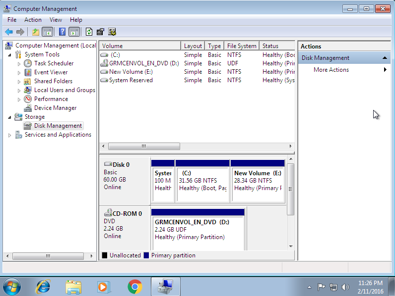
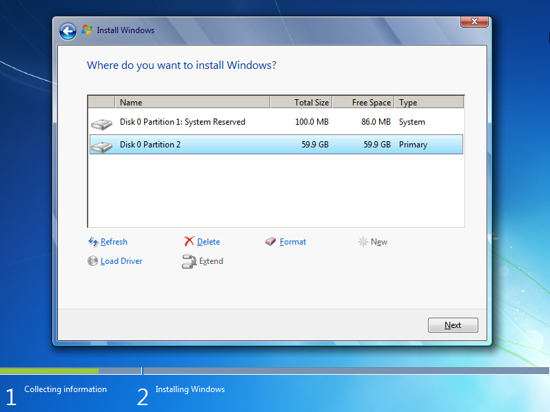

(軟體篇)準備安裝硬碟 <<
Previous Next >> HW2
(軟體篇)劃分磁碟區
硬盤驅動器實際上可以分為多個分區。 主分區包含單個驅動器號，通常以（C：\）開頭，並且可以使其處於活動狀態或可引導狀態。 這是Windows 7的安裝位置。 擴展分區可以包含一個或多個邏輯驅動器，並且該分區和關聯的驅動器不可引導。 您可以將驅動器劃分為多個分區。 例如，在下面的屏幕截圖中，硬盤實際上被分為四個主要分區，每個分區的百分比分別為（C：\），（D：\），（E：\）和（F：\）。 屏幕底部的圖顯示了單個主分區（驅動器的25％）和三個擴展分區（每個驅動器的25％）的外觀。 相反，整個磁盤可以用作具有單個主分區（C：\）的單個驅動器。 或者，如果有兩個硬盤，則第二個磁盤可以100％用作擴展分區，僅用於數據（無操作系統）。
Hard drives can be virtually split into multiple partitions. The primary partition contains a single drive letter, usually beginning with (C:\), and can be made active, or bootable. This is where Windows 7 should be installed. An extended partition can contain one or more logical drives and the partition and associated drives cannot be bootable. You can carve up a drive into multiple partitions. For example, in the screenshot below, the hard disk has been virtually split into four primary partitions of 25 percent each (C:\), (D:\), (E:\), and (F:\). The diagram in the bottom of the screen shows how this looks with a single primary partition (25 percent of the drive), and three extended partitions (25 percent each of the drive). Conversely, the entire disk could be used as a single drive with a single primary partition (C:\). Or, if there are two hard disks, the second disk could be used 100 percent as an extended partition, used solely for data (no operating system).

在Windows 7中的安裝過程中，技術人員必須從下圖所示的屏幕中選擇一個分區（或創建新分區並選擇適當的分區）以在其上安裝Windows。
During the installation procedure in Windows 7, the technician must choose a partition (or create new partitions and select the appropriate one) to install Windows on from the screen shown in the image below.

要創建分區，請單擊未分區的驅動器，然後單擊“創建”。 它將提示您輸入分區大小和要使用的文件系統（NTFS）類型。 要刪除分區，請單擊現有分區，然後單擊“刪除”。 要選擇要在其上安裝操作系統的分區，請使用鼠標單擊該分區，然後單擊“下一步”。 在上面的屏幕中，20 GB硬盤驅動器當前有兩個分區，並創建了文件系統。
To create a partition, click on the unpartitioned drive, and click Create. It will prompt you for the partition size and type of file system to use (NTFS). To delete a partition, click on the existing partition, and click Delete. To select the partition to install the operating system on, click on it using the mouse, and click Next. In the screen above, the 20 GB hard drive currently has two partitions with file systems created.
安裝過程中需要的信息
在安裝過程中，技術人員必須輸入某些信息，例如名稱，組織，語言，時間/貨幣，鍵盤方法和產品密鑰。接受最終用戶許可協議，選擇升級/完全安裝選項以及選擇要安裝的硬盤驅動器分區都是必需的。如果技術人員不希望在安裝過程中手動輸入此信息，則使用無人參與的安裝方法（unattend.xml）。
Information Needed During Installation
During installation a technician must input certain information such as the name, organization, language, time/currency, keyboard method, and product key. Accepting the end user license agreement, selecting upgrade/full installation option, and selecting the hard drive partition for installation are all required. If the technician doesn’t wish to manually input this information during installation, the unattended installation method (unattend.xml) is used.
服務包
安裝後，確保操作系統具有最新的安全補丁很重要。由於在軟件的初始版本和當前版本之間可能已經發布了許多安全補丁，因此Microsoft將安全更新捆綁到Service Pack中。例如，對於Windows 7，只有一個Service Pack，其中包含數百個安全補丁。它包含針對編程錯誤（稱為bug），安全漏洞和系統改進的更新和修復。為了安裝Service Pack，您必須轉到windows.microsoft.com。接下來，您應該查看發行說明中可能遇到的任何潛在問題。準備就緒後，下載適用於您的Windows版本的正確Service Pack。然後，備份您的當前數據。備份數據後，通過運行下載的安裝實用程序來安裝Service Pack。 Windows 7將繼續收到更新和錯誤修復，直到2020年1月14日，微軟確定其支持將停止，因為Windows 7將達到“使用壽命終止”狀態。
Service Packs
After installation, it is important to ensure the operating system has the latest security patches. Because a number of security patches may have come out between the initial release of the software and the current version, Microsoft bundles security updates into service packs. For Windows 7, for example, there is only one service pack, containing hundreds of security patches. It contains updates and fixes for programming errors (called bugs), security flaws, and improvements to the system. In order to install a service pack, you must go to windows.microsoft.com. Next, you should review the release notes for any potential issues you may face. When you are ready, download the proper service pack for your version of Windows. Then, back up your current data. After backing up the data, install the service pack by running the installation utility downloaded. Windows 7 will continue to receive updates and bug fixes until January 14, 2020, when Microsoft has determined its support will stop as Windows 7 will reach “end of life” status.
(軟體篇)準備安裝硬碟 <<
Previous Next >> HW2